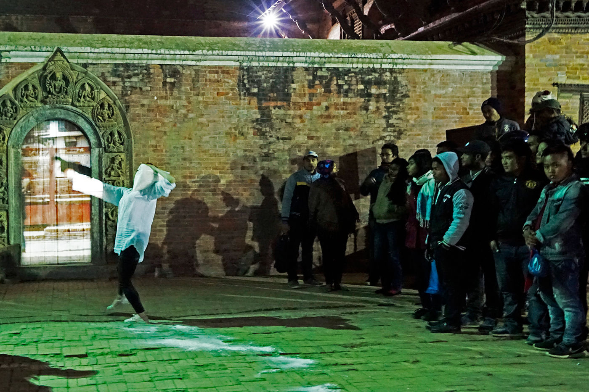
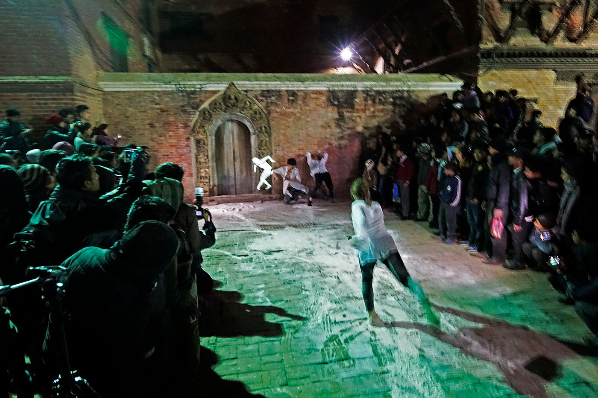
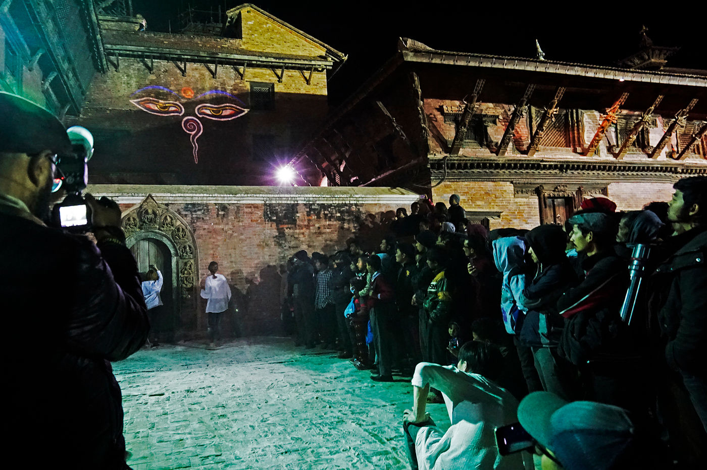
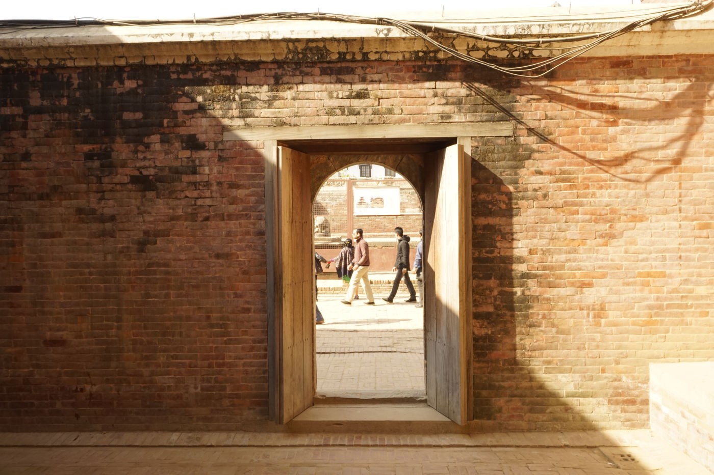

Performance — 2016
Dhoka
네팔어로 '문'을 뜻하는 도카(dhoka) — 관문·성찰·확장의 세 장면으로 이루어진 현장 퍼포먼스.
Dhoka, the Nepali word for ‘door’ — a site-specific performance in three scenes: Gate, Reflection, and Expansion.
네팔어로 ‘도카(धोका)’는 전통 건축물의 문을 가리키는 말입니다. 문이 열리는 것은 새로운 가능성을 상징하는 반면, 문이 닫히는 것은 기회의 상실을 뜻하기도 합니다. 동시에 삶의 중요한 전환점이나 운명적인 순간을 나타내는 이중적인 의미도 지니고 있습니다.
이 퍼포먼스는 관문(Gate), 성찰(Reflection), 확장(Expansion) 세 장면으로 구성됩니다. 네팔어로 ‘붓다 코 앙카(बुद्धको आँखा)’라 불리는 ‘지혜의 눈’이 시각적으로 표현되어, 공연 전체를 지켜봅니다.
In Nepali, ‘dhoka’ (धोका) refers to the doors of traditional buildings. The opening of a door symbolizes new possibility, while its closing can signify the loss of opportunity — carrying a dual meaning that also marks important turning points or fateful moments in life. The performance unfolds across three scenes: Gate, Reflection, and Expansion, watched over throughout by a visual rendering of the ‘Eye of Wisdom’ (बुद्धको आँखा).
- 키워드
- Keywords
- threshold · site-specific · Nepal · Eye of Wisdom
Patan Durbar Square, Patan, Nepal — 2016


